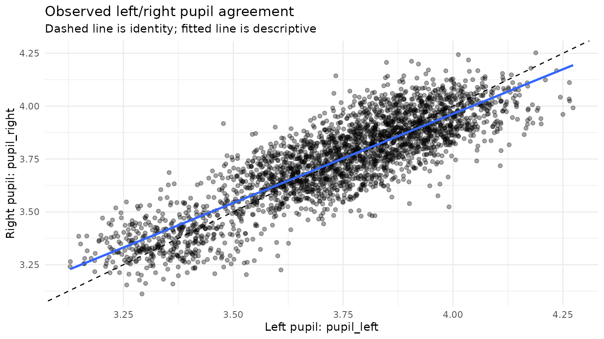
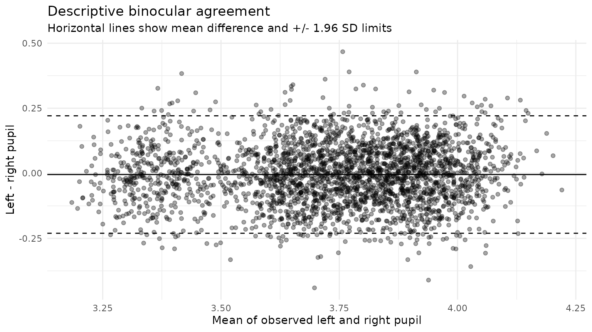
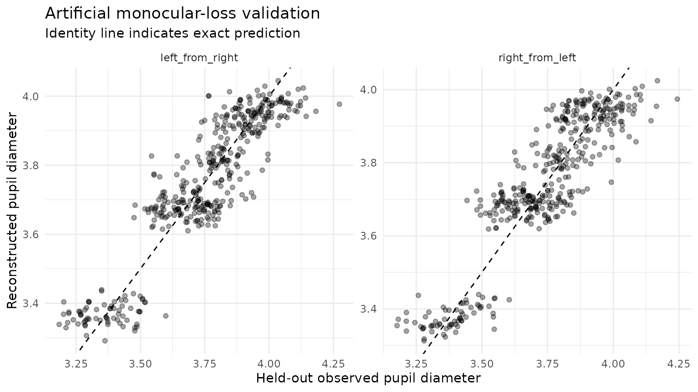
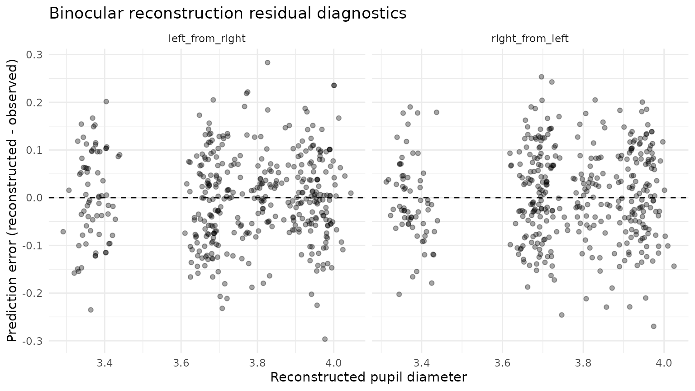
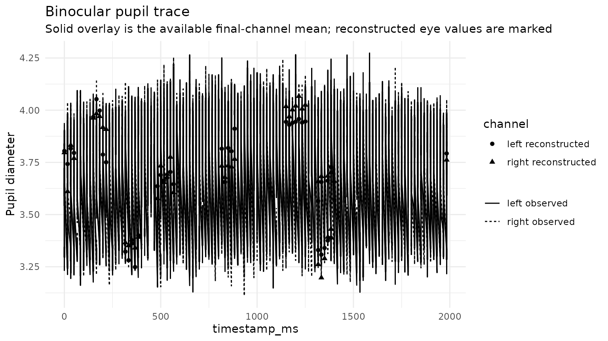
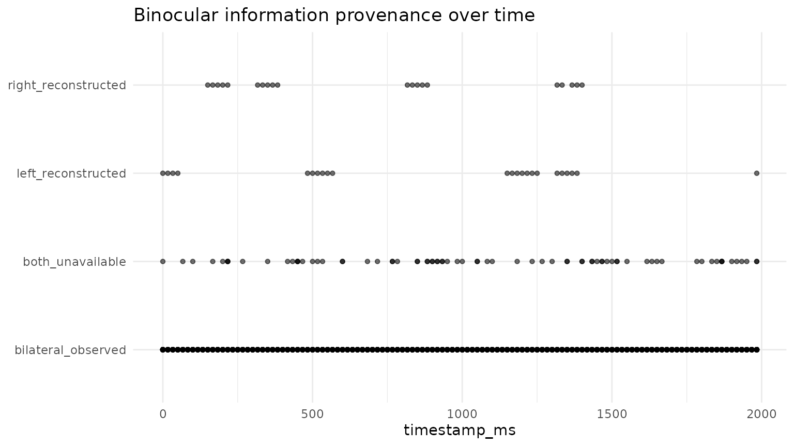
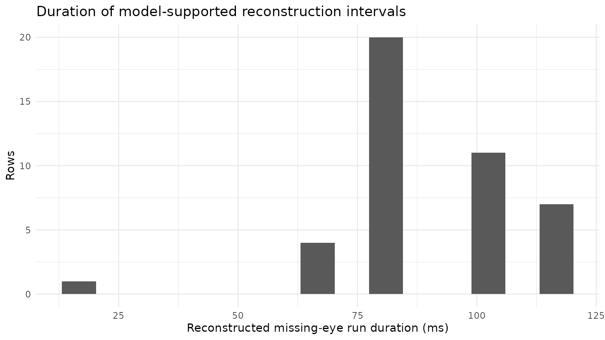
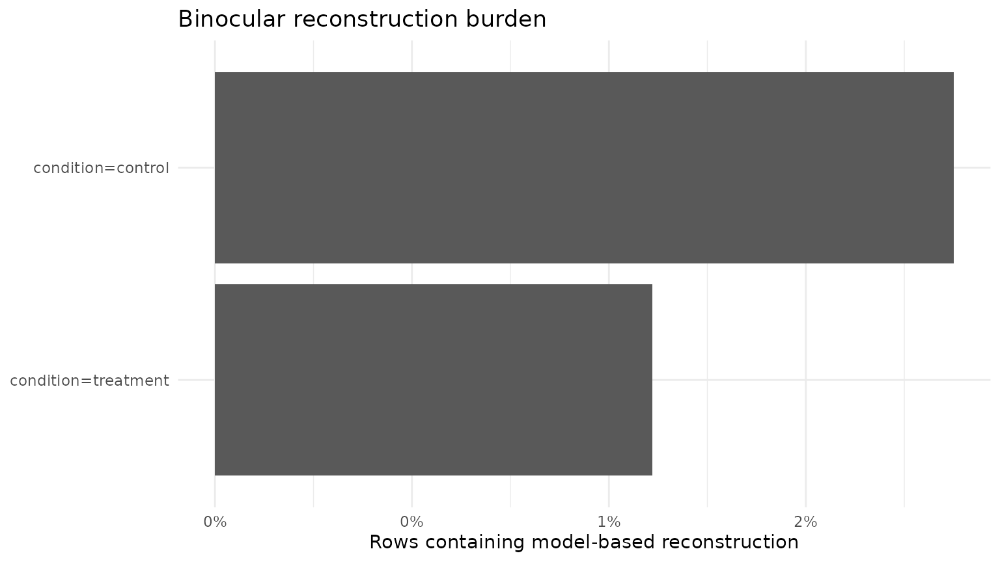
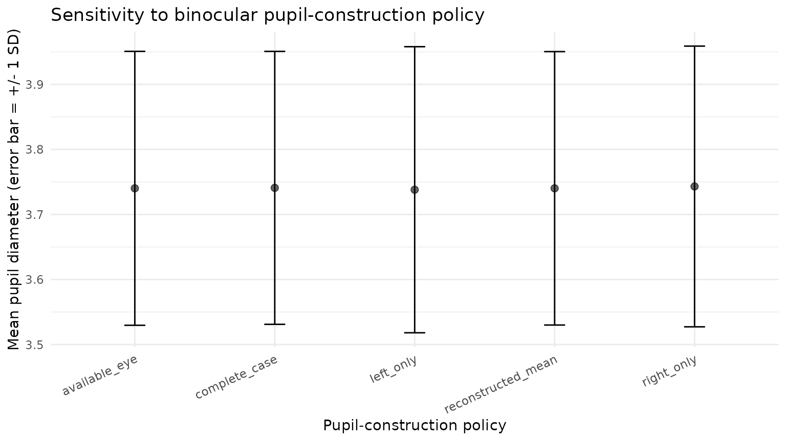

Auditable Binocular Pupil Reconstruction and Sensitivity Analysis
Source:vignettes/articles/auditable-binocular-pupil-reconstruction.Rmd
auditable-binocular-pupil-reconstruction.RmdWhy a separate reconstruction workflow?
Binocular pupil channels are related but not interchangeable. A tracker may temporarily retain one eye while the other eye is unavailable, and a simple sample-wise mean can therefore change its measurement basis from two eyes to one without making that change visible in the analysis table. Conversely, filling a missing eye with a prediction can increase continuity while introducing model error.
gp3tools already provides lightweight binocular fusion
with combine_gazepoint_eyes(), a regression-oriented fusion
helper with regress_gazepoint_pupils(), pupil artifact
detection, PCHIP interpolation, baseline correction, preprocessing
audits, and sensitivity workflows. The functions in this article add a
stricter layer for model-based missing-eye
reconstruction. Their design principle is simple: a predicted
pupil value must never become indistinguishable from an observed pupil
value.
The workflow was motivated in part by Ong et al. (2025), who
reconstructed a missing left or right pupil value from the other eye
with linear regression when estimating a mean pupil series. Their paper
also makes clear that regression can introduce bias when pupil variation
is rapid or irregular. gp3tools therefore treats cross-eye
reconstruction as a declared policy that should be validated and
sensitivity-checked, not as a universally correct replacement for
missing measurements.
What reconstruction does and does not mean
The workflow can estimate a temporarily unavailable pupil channel from the simultaneously observed contralateral channel. It can answer questions such as:
- how much bilateral information is actually available;
- whether a participant/session has enough paired samples for calibration;
- how accurately an eye can be predicted when its true value is deliberately hidden;
- how much of a final analysis series depends on predicted values;
- whether reconstruction is concentrated in one experimental condition;
- whether conclusions are sensitive to using complete cases, available-eye values, or regression-supported reconstruction.
It does not establish that a predicted value is the unobserved biological truth, that naturally missing values are missing at random, or that a high cross-eye correlation is sufficient evidence for unrestricted imputation.
Synthetic example
The example is generated entirely in R and is not an empirical
Gazepoint recording. We start with
simulate_gazepoint_pupil_data() and introduce short
monocular losses while retaining the generator’s bilateral blink
losses.
pupil <- simulate_gazepoint_pupil_data(
n_subjects = 6,
n_trials = 4,
n_time_bins = 120,
seed = 20260817
)
# Add a small deterministic between-eye calibration offset.
pupil$pupil_right <- 0.08 + 0.98 * pupil$pupil_right
# Introduce synthetic monocular losses. These are deliberately not labelled as blinks.
left_loss <- c(80:84, 510:515, 1320:1324, 2110:2116)
right_loss <- c(260:264, 890:894, 1690:1694, 2480:2485)
pupil$pupil_left[left_loss] <- NA_real_
pupil$pupil_right[right_loss] <- NA_real_
pupil[75:90, c(
"subject", "trial", "condition", "timestamp_ms",
"pupil_left", "pupil_right", "blink"
)]
#> subject trial condition timestamp_ms pupil_left pupil_right blink
#> 75 S001 1 control 1233.58 3.313574 3.300916 FALSE
#> 76 S001 1 control 1250.25 3.365124 3.324580 FALSE
#> 77 S001 1 control 1266.92 3.398240 3.340684 FALSE
#> 78 S001 1 control 1283.59 3.529691 3.203018 FALSE
#> 79 S001 1 control 1300.26 3.225775 3.263195 FALSE
#> 80 S001 1 control 1316.93 NA 3.261327 FALSE
#> 81 S001 1 control 1333.60 NA 3.197705 FALSE
#> 82 S001 1 control 1350.27 NA 3.289575 FALSE
#> 83 S001 1 control 1366.94 NA 3.392627 FALSE
#> 84 S001 1 control 1383.61 NA 3.430466 FALSE
#> 85 S001 1 control 1400.28 3.531753 3.261433 FALSE
#> 86 S001 1 control 1416.95 3.167372 3.315744 FALSE
#> 87 S001 1 control 1433.62 3.321451 3.323391 FALSE
#> 88 S001 1 control 1450.29 3.241113 3.212430 FALSE
#> 89 S001 1 control 1466.96 3.395153 3.212441 FALSE
#> 90 S001 1 control 1483.63 3.286586 3.176851 FALSERecommended position in the preprocessing workflow
Cross-eye reconstruction and temporal interpolation address different missing-data situations. A defensible order for a study that chooses to use reconstruction is:
- preserve raw eye-specific channels;
- identify invalid measurements, blinks, track loss, and other artifacts;
- create eye-specific cleaned channels;
- diagnose bilateral availability and agreement;
- fit and validate cross-eye calibration on directly observed bilateral samples;
- reconstruct eligible monocular gaps, if the study has declared that policy;
- construct the combined pupil signal under an explicit combination policy;
- if required, interpolate remaining temporal gaps under a separately declared rule;
- baseline-correct, smooth, summarise, and model;
- report reconstruction burden and run sensitivity analyses.
This order is not a claim that every study should reconstruct. In many datasets the appropriate result of the diagnostic stage will be to retain available-eye or complete-case processing instead.
1. Diagnose before reconstructing
diagnostics <- diagnose_gazepoint_binocular_pupil(
pupil,
left_col = "pupil_left",
right_col = "pupil_right",
time_col = "timestamp_ms",
group_cols = c("subject", "trial"),
time_unit = "milliseconds",
valid_min = 1,
valid_max = 9,
min_pairs = 40
)
diagnostics$summary[c(
"subject", "trial", "n", "n_bilateral", "n_left_only",
"n_right_only", "prop_bilateral", "correlation",
"rmse_between_eyes", "calibration_eligible"
)]
#> # A tibble: 24 × 10
#> subject trial n n_bilateral n_left_only n_right_only prop_bilateral
#> <chr> <int> <int> <int> <int> <int> <dbl>
#> 1 S001 1 120 111 0 5 0.925
#> 2 S001 2 120 118 0 0 0.983
#> 3 S001 3 120 112 5 0 0.933
#> 4 S001 4 120 118 0 0 0.983
#> 5 S002 1 120 109 0 6 0.908
#> 6 S002 2 120 117 0 0 0.975
#> 7 S002 3 120 117 0 0 0.975
#> 8 S002 4 120 112 5 0 0.933
#> 9 S003 1 120 116 0 0 0.967
#> 10 S003 2 120 116 0 0 0.967
#> # ℹ 14 more rows
#> # ℹ 3 more variables: correlation <dbl>, rmse_between_eyes <dbl>,
#> # calibration_eligible <lgl>The diagnostic object also retains missing-eye run information.
head(diagnostics$gaps)
#> # A tibble: 6 × 8
#> gap_id group_key n_samples gap_ms edge_gap start_row end_row eye
#> <int> <chr> <int> <dbl> <lgl> <int> <int> <chr>
#> 1 1 subject=S001||trial=1 1 16.7 FALSE 26 26 left
#> 2 2 subject=S001||trial=1 2 33.3 FALSE 28 29 left
#> 3 3 subject=S001||trial=1 5 83.4 FALSE 80 84 left
#> 4 4 subject=S001||trial=1 1 16.7 FALSE 109 109 left
#> 5 5 subject=S001||trial=2 1 16.7 FALSE 176 176 left
#> 6 6 subject=S001||trial=2 1 16.7 FALSE 231 231 leftAgreement is best inspected rather than reduced to one correlation coefficient.
plot_gazepoint_binocular_diagnostics(
pupil,
type = "agreement",
left_col = "pupil_left",
right_col = "pupil_right"
)
Observed left/right pupil agreement. The dashed identity line is distinct from the fitted descriptive relationship.
plot_gazepoint_binocular_diagnostics(
pupil,
type = "bland_altman",
left_col = "pupil_left",
right_col = "pupil_right"
)
Descriptive left-minus-right agreement across the observed pupil range.
The difference plot is descriptive. Its mean difference and +/-1.96 SD lines should not be interpreted as proof that the two eye channels are interchangeable.
2. Fit auditable bidirectional calibration
The calibration stage fits separate left-from-right and right-from-left models. Here the primary models are participant-specific and a pooled fallback is retained. Fallback is explicit in the returned model table.
calibration <- fit_gazepoint_binocular_calibration(
pupil,
left_col = "pupil_left",
right_col = "pupil_right",
group_cols = "subject",
# Default fallback is pooled when primary groups are supplied.
min_pairs = 80,
min_unique = 10,
min_r2 = NULL,
valid_min = 1,
valid_max = 9
)
calibration$models[c(
"model_id", "direction", "calibration_level", "n_pairs",
"intercept", "slope", "r_squared", "rmse", "mae",
"eligible", "reason"
)]
#> # A tibble: 14 × 11
#> model_id direction calibration_level n_pairs intercept slope r_squared rmse
#> <chr> <chr> <chr> <int> <dbl> <dbl> <dbl> <dbl>
#> 1 binoc_0… left_fro… subject 459 2.20 0.346 0.118 0.0931
#> 2 binoc_0… right_fr… subject 459 2.24 0.340 0.118 0.0923
#> 3 binoc_0… left_fro… subject 455 2.41 0.343 0.116 0.0919
#> 4 binoc_0… right_fr… subject 455 2.44 0.340 0.116 0.0914
#> 5 binoc_0… left_fro… subject 462 2.53 0.334 0.124 0.0885
#> 6 binoc_0… right_fr… subject 462 2.40 0.370 0.124 0.0931
#> 7 binoc_0… left_fro… subject 466 2.84 0.286 0.0713 0.0985
#> 8 binoc_0… right_fr… subject 466 2.97 0.249 0.0713 0.0920
#> 9 binoc_0… left_fro… subject 454 2.81 0.281 0.0771 0.0916
#> 10 binoc_0… right_fr… subject 454 2.85 0.274 0.0771 0.0904
#> 11 binoc_0… left_fro… subject 463 2.67 0.275 0.0728 0.0967
#> 12 binoc_0… right_fr… subject 463 2.71 0.265 0.0728 0.0949
#> 13 binoc_0… left_fro… pooled 2759 0.454 0.877 0.740 0.112
#> 14 binoc_0… right_fr… pooled 2759 0.591 0.843 0.740 0.110
#> # ℹ 3 more variables: mae <dbl>, eligible <lgl>, reason <chr>min_r2 = NULL is intentional. R-squared is reported, but
no universal R-squared threshold is presented as a validity rule. A
study can declare a threshold if it has a substantive reason to do
so.
3. Validate by hiding values that are actually known
Bilateral observations provide an unusually useful validation opportunity: one eye can be deliberately hidden and reconstructed from the other while its true observed value is retained outside the training data for error calculation.
validation <- validate_gazepoint_binocular_reconstruction(
pupil,
left_col = "pupil_left",
right_col = "pupil_right",
time_col = "timestamp_ms",
group_cols = "subject",
gap_group_cols = c("subject", "trial"),
direction = "both",
mask_prop = 0.10,
mask_mode = "contiguous",
block_size = 5,
repeats = 3,
seed = 1729,
min_pairs = 80,
valid_min = 1,
valid_max = 9
)
validation$summary
#> # A tibble: 2 × 11
#> direction repeats total_requested total_predicted prediction_rate rmse
#> <chr> <int> <int> <int> <dbl> <dbl>
#> 1 left_from_right 3 422 422 1 0.0914
#> 2 right_from_left 3 412 410 0.995 0.0930
#> # ℹ 5 more variables: mae <dbl>, bias <dbl>, median_error <dbl>,
#> # error_mad <dbl>, correlation <dbl>The result reports the fraction of requested held-out samples that could actually be reconstructed, together with RMSE, MAE, bias, and correlation.
plot_gazepoint_binocular_diagnostics(validation, type = "validation")
#> Warning: Removed 2 rows containing missing values or values outside the scale range
#> (`geom_point()`).
Observed versus reconstructed pupil values under artificial monocular loss.
plot_gazepoint_binocular_diagnostics(validation, type = "residuals")
#> Warning: Removed 2 rows containing missing values or values outside the scale range
#> (`geom_point()`).
Prediction error as a function of reconstructed pupil diameter.
A good artificial-missingness result is evidence that the declared model predicts held-out bilateral samples well. It cannot show that naturally missing samples follow the same missingness process.
4. Reconstruct under explicit gates
The following policy allows regression reconstruction only for missing-eye runs no longer than 150 ms, disallows predictor extrapolation, and excludes any row that is already marked as a blink.
reconstructed <- reconstruct_gazepoint_binocular_pupil(
pupil,
left_col = "pupil_left",
right_col = "pupil_right",
time_col = "timestamp_ms",
group_cols = "subject",
gap_group_cols = c("subject", "trial"),
method = "linear_regression",
calibration = calibration,
time_unit = "milliseconds",
max_gap_ms = 150,
allow_edge_gaps = TRUE,
allow_extrapolation = FALSE,
valid_min = 1,
valid_max = 9,
exclude_flag_cols = "blink"
)
table(reconstructed$gp3_binocular_status)
#>
#> bilateral_observed both_unavailable left_reconstructed right_reconstructed
#> 2759 78 23 20The original columns are untouched. The added columns distinguish the observed and final channels, prediction direction, model identity, calibration level, model R-squared, extrapolation status, gap duration, and row-level outcome.
reconstructed[75:90, c(
"pupil_left", "pupil_right",
"gp3_binocular_left_observed", "gp3_binocular_right_observed",
"gp3_binocular_left_final", "gp3_binocular_right_final",
"gp3_binocular_reconstructed", "gp3_binocular_model_id",
"gp3_binocular_gap_ms", "gp3_binocular_status"
)]
#> pupil_left pupil_right gp3_binocular_left_observed
#> 75 3.313574 3.300916 3.313574
#> 76 3.365124 3.324580 3.365124
#> 77 3.398240 3.340684 3.398240
#> 78 3.529691 3.203018 3.529691
#> 79 3.225775 3.263195 3.225775
#> 80 NA 3.261327 NA
#> 81 NA 3.197705 NA
#> 82 NA 3.289575 NA
#> 83 NA 3.392627 NA
#> 84 NA 3.430466 NA
#> 85 3.531753 3.261433 3.531753
#> 86 3.167372 3.315744 3.167372
#> 87 3.321451 3.323391 3.321451
#> 88 3.241113 3.212430 3.241113
#> 89 3.395153 3.212441 3.395153
#> 90 3.286586 3.176851 3.286586
#> gp3_binocular_right_observed gp3_binocular_left_final
#> 75 3.300916 3.313574
#> 76 3.324580 3.365124
#> 77 3.340684 3.398240
#> 78 3.203018 3.529691
#> 79 3.263195 3.225775
#> 80 3.261327 3.330176
#> 81 3.197705 3.308135
#> 82 3.289575 3.339962
#> 83 3.392627 3.375662
#> 84 3.430466 3.388771
#> 85 3.261433 3.531753
#> 86 3.315744 3.167372
#> 87 3.323391 3.321451
#> 88 3.212430 3.241113
#> 89 3.212441 3.395153
#> 90 3.176851 3.286586
#> gp3_binocular_right_final gp3_binocular_reconstructed
#> 75 3.300916 FALSE
#> 76 3.324580 FALSE
#> 77 3.340684 FALSE
#> 78 3.203018 FALSE
#> 79 3.263195 FALSE
#> 80 3.261327 TRUE
#> 81 3.197705 TRUE
#> 82 3.289575 TRUE
#> 83 3.392627 TRUE
#> 84 3.430466 TRUE
#> 85 3.261433 FALSE
#> 86 3.315744 FALSE
#> 87 3.323391 FALSE
#> 88 3.212430 FALSE
#> 89 3.212441 FALSE
#> 90 3.176851 FALSE
#> gp3_binocular_model_id gp3_binocular_gap_ms gp3_binocular_status
#> 75 <NA> NA bilateral_observed
#> 76 <NA> NA bilateral_observed
#> 77 <NA> NA bilateral_observed
#> 78 <NA> NA bilateral_observed
#> 79 <NA> NA bilateral_observed
#> 80 binoc_001_left_from_right 83.35 left_reconstructed
#> 81 binoc_001_left_from_right 83.35 left_reconstructed
#> 82 binoc_001_left_from_right 83.35 left_reconstructed
#> 83 binoc_001_left_from_right 83.35 left_reconstructed
#> 84 binoc_001_left_from_right 83.35 left_reconstructed
#> 85 <NA> NA bilateral_observed
#> 86 <NA> NA bilateral_observed
#> 87 <NA> NA bilateral_observed
#> 88 <NA> NA bilateral_observed
#> 89 <NA> NA bilateral_observed
#> 90 <NA> NA bilateral_observed5. Construct a combined signal as a separate decision
Reconstruction does not silently create the outcome variable. The analyst chooses how a combined pupil signal should be constructed.
combined <- construct_gazepoint_combined_pupil(
reconstructed,
left_col = "pupil_left",
right_col = "pupil_right",
policy = "reconstructed_mean",
output_col = "pupil_reconstruction_policy",
status_col = "pupil_reconstruction_source"
)
table(combined$pupil_reconstruction_source)
#>
#> bilateral_observed bilateral_with_reconstruction
#> 2759 43
#> unavailable
#> 78Alternative policies include complete_case,
available_eye, left_only, and
right_only.
6. Inspect temporal provenance
plot_gazepoint_binocular_diagnostics(reconstructed, type = "trace")
Observed binocular traces with reconstructed final values marked explicitly.
plot_gazepoint_binocular_diagnostics(reconstructed, type = "timeline")
Row-level binocular information status over time.
plot_gazepoint_binocular_diagnostics(reconstructed, type = "gaps", bins = 15)
Duration of missing-eye runs that were reconstructed.
The dashboard option returns a list of these ggplot objects rather than adding a layout dependency.
dashboard <- plot_gazepoint_binocular_diagnostics(
reconstructed,
type = "dashboard"
)
names(dashboard)
#> [1] "trace" "agreement" "timeline" "gaps"7. Audit reconstruction burden and condition imbalance
audit <- audit_gazepoint_binocular_reconstruction(
reconstructed,
by = "condition",
max_reconstruction_prop = 0.20,
max_group_rate_difference = 0.10
)
audit$overall
#> # A tibble: 1 × 11
#> group_key n n_bilateral_observed n_reconstructed n_monocular_unreconstr…¹
#> <chr> <int> <int> <int> <int>
#> 1 __pooled__ 2880 2759 43 0
#> # ℹ abbreviated name: ¹n_monocular_unreconstructed
#> # ℹ 6 more variables: n_unavailable <int>, n_blocked <int>,
#> # bilateral_observed_fraction <dbl>, reconstruction_fraction <dbl>,
#> # monocular_unreconstructed_fraction <dbl>, unavailable_fraction <dbl>
audit$by_group
#> # A tibble: 2 × 12
#> condition group_key n n_bilateral_observed n_reconstructed
#> <chr> <chr> <int> <int> <int>
#> 1 control condition=control 1440 1369 27
#> 2 treatment condition=treatment 1440 1390 16
#> # ℹ 7 more variables: n_monocular_unreconstructed <int>, n_unavailable <int>,
#> # n_blocked <int>, bilateral_observed_fraction <dbl>,
#> # reconstruction_fraction <dbl>, monocular_unreconstructed_fraction <dbl>,
#> # unavailable_fraction <dbl>
audit$reconstruction_shift
#> # A tibble: 1 × 5
#> n_reconstructed_rows_with_shift mean_reconstruction_s…¹ median_reconstructio…²
#> <int> <dbl> <dbl>
#> 1 43 0.000772 -0.00234
#> # ℹ abbreviated names: ¹mean_reconstruction_shift, ²median_reconstruction_shift
#> # ℹ 2 more variables: mean_absolute_reconstruction_shift <dbl>,
#> # max_absolute_reconstruction_shift <dbl>
audit$audit
#> # A tibble: 1 × 5
#> status reconstruction_fraction reconstruction_threshold burden_flag
#> <chr> <dbl> <dbl> <lgl>
#> 1 ok 0.0149 0.2 FALSE
#> # ℹ 1 more variable: imbalance_flag <lgl>The thresholds above are governance flags. They are not universal statistical or physiological validity cutoffs.
plot_gazepoint_binocular_diagnostics(audit, type = "burden")
Reconstruction burden by experimental condition.
8. Compare alternative pupil-construction policies
sensitivity <- analyse_gazepoint_binocular_sensitivity(
reconstructed,
left_col = "pupil_left",
right_col = "pupil_right",
policies = c(
"complete_case",
"available_eye",
"reconstructed_mean",
"left_only",
"right_only"
),
condition_col = "condition"
)
sensitivity$summary
#> # A tibble: 5 × 9
#> policy group_key n_total n_usable missing_fraction mean sd median mad
#> <chr> <chr> <int> <int> <dbl> <dbl> <dbl> <dbl> <dbl>
#> 1 complete… __pooled… 2880 2759 0.0420 3.74 0.210 3.77 0.138
#> 2 availabl… __pooled… 2880 2802 0.0271 3.74 0.211 3.77 0.138
#> 3 reconstr… __pooled… 2880 2802 0.0271 3.74 0.210 3.77 0.138
#> 4 left_only __pooled… 2880 2779 0.0351 3.74 0.220 3.77 0.145
#> 5 right_on… __pooled… 2880 2782 0.0340 3.74 0.216 3.77 0.140
sensitivity$correlations
#> # A tibble: 10 × 6
#> policy_1 policy_2 n_complete correlation mean_difference
#> <chr> <chr> <int> <dbl> <dbl>
#> 1 complete_case available_eye 2759 1 0
#> 2 complete_case reconstructed_mean 2759 1 0
#> 3 complete_case left_only 2759 0.965 0.00237
#> 4 complete_case right_only 2759 0.964 -0.00237
#> 5 available_eye reconstructed_mean 2802 1.000 -0.0000119
#> 6 available_eye left_only 2779 0.965 0.00236
#> 7 available_eye right_only 2782 0.964 -0.00235
#> 8 reconstructed_mean left_only 2779 0.965 0.00240
#> 9 reconstructed_mean right_only 2782 0.964 -0.00239
#> 10 left_only right_only 2759 0.860 -0.00475
#> # ℹ 1 more variable: mean_absolute_difference <dbl>
sensitivity$condition_contrasts
#> # A tibble: 5 × 4
#> policy reference comparison mean_difference
#> <chr> <chr> <chr> <dbl>
#> 1 complete_case control treatment 0.0880
#> 2 available_eye control treatment 0.0913
#> 3 reconstructed_mean control treatment 0.0908
#> 4 left_only control treatment 0.0874
#> 5 right_only control treatment 0.0918The condition contrasts are descriptive mean differences only. The function deliberately does not generate a new p-value for every preprocessing policy.
plot_gazepoint_binocular_diagnostics(sensitivity, type = "sensitivity")
Mean pupil diameter under alternative binocular construction policies.
9. Reconstruction and PCHIP are different decisions
Ong et al. (2025) used PCHIP to create a common high-frequency time
base, removed interpolated segments corresponding to original gaps
longer than 250 ms, and then used cross-eye regression when one eye
remained unavailable. gp3tools does not hard-code that
study-specific sequence or cutoff.
For a workflow that uses cross-eye reconstruction first, PCHIP can be applied afterwards to remaining short gaps in the explicitly constructed signal. This is useful when the analyst wants to keep model-based cross-eye support separate from temporal interpolation.
if (requireNamespace("pracma", quietly = TRUE)) {
pchip <- interpolate_gazepoint_pupil_pchip(
combined,
pupil_col = "pupil_reconstruction_policy",
time_col = "timestamp_ms",
grouping_cols = c("subject", "trial"),
max_gap_ms = 150,
output_col = "pupil_after_reconstruction_pchip",
flag_col = "pupil_pchip_after_reconstruction",
status_col = "pupil_pchip_status"
)
table(pchip$pupil_pchip_after_reconstruction)
}
#>
#> FALSE TRUE
#> 2805 75A study can reverse the order if its measurement and synchronization design requires it, but it should report the choice. The two operations should not be collapsed into an undocumented generic “imputation” step.
10. Baseline correction follows the declared combined signal
After choosing the pupil-construction policy, the resulting signal can enter the existing baseline and smoothing workflow. Baseline windows should be designed prospectively when possible. Ong et al. selected the first period with at least 400 ms of consecutive valid bilateral data because a controlled baseline had not been collected; the authors identify this as a limitation rather than a universal rule.
A study with an experimental baseline can use the existing
baseline_correct_gazepoint_pupil() interface on the
declared combined column.
baseline_corrected <- baseline_correct_gazepoint_pupil(
combined,
pupil_col = "pupil_reconstruction_policy",
time_col = "timestamp_ms",
group_cols = c("subject", "trial"),
baseline_window = c(0, 200),
min_baseline_samples = 5
)The example is not executed because the synthetic trials are not designed as a real baseline experiment; the code illustrates where the existing function belongs in the workflow.
11. Manuscript-ready reporting
reporting <- summarise_gazepoint_binocular_reporting(
reconstructed,
audit = audit,
validation = validation
)
reporting$summary
#> # A tibble: 1 × 9
#> n_rows n_reconstructed reconstruction_fraction bilateral_observed_fraction
#> <int> <int> <dbl> <dbl>
#> 1 2880 43 0.0149 0.958
#> # ℹ 5 more variables: monocular_unreconstructed_fraction <dbl>,
#> # audit_status <chr>, method <chr>, max_gap_ms <dbl>,
#> # allow_extrapolation <lgl>
cat(reporting$text)
#> Binocular pupil handling used the declared `linear_regression` policy. Of 2880 rows, 43 (1.5%) contained model-based cross-eye reconstruction; 95.8% were retained as directly observed bilateral samples and 0.0% remained monocular without reconstruction. Eligible cross-eye calibration models used a median of 462 paired observations; the median in-sample R-squared was 0.116. Artificial monocular-loss validation reconstructed 99.8% of requested held-out values, with RMSE 0.092 and MAE 0.075. Reconstructed values were retained as predicted values with explicit row-level provenance; they were not treated as independently measured pupil observations.The returned limitations can be reused when preparing a methods supplement or analysis decision log.
reporting$limitations
#> [1] "Cross-eye prediction is a preprocessing reconstruction and does not recover an independently observed biological truth."
#> [2] "Artificial masking quantifies prediction performance on observed bilateral samples but cannot establish the missingness mechanism of naturally unavailable samples."
#> [3] "Calibration diagnostics and reconstruction burden should be reported alongside downstream sensitivity analyses."
#> [4] "Temporal interpolation and cross-eye reconstruction should remain separately declared analytical decisions."12. When reconstruction should not be used
A conservative workflow should retain an explicit
reconstruction_ineligible or
reconstruction_blocked_* status when:
- too few bilateral observations are available for calibration;
- one eye has effectively no variance;
- the fitted relationship is unstable or biologically implausible;
- a prediction requires prohibited extrapolation;
- the predicted diameter violates declared bounds;
- the missing-eye run exceeds the declared duration limit;
- a row is explicitly excluded because it is blink/artifact contaminated;
- pseudo-missing validation shows unacceptable prediction error for the intended use;
- reconstruction burden is so large or imbalanced that the downstream result is materially policy-dependent.
The framework therefore permits a scientifically meaningful outcome of no reconstruction.
13. Relationship to the existing lightweight binocular helpers
Use combine_gazepoint_eyes() when a transparent
sample-wise fusion rule is all that is required. Use the existing
regress_gazepoint_pupils() workflow when its documented
regression-fusion behavior matches the analysis plan. Use the functions
in this article when the goal is specifically to reconstruct a
temporarily missing eye with explicit calibration eligibility,
gap/extrapolation gates, pseudo-missing validation, row-level
provenance, reconstruction burden, and sensitivity analysis.
No existing function changes its default behavior.
References
Ong, J., He, W., Maglanque, P., Jiang, X., Gillman, L. M., Vergis, A., & Hardy, K. (2025). A Preprocessing Pipeline for Pupillometry Signal from Multimodal iMotion Data. Sensors, 25(15), 4737. doi:10.3390/s25154737.